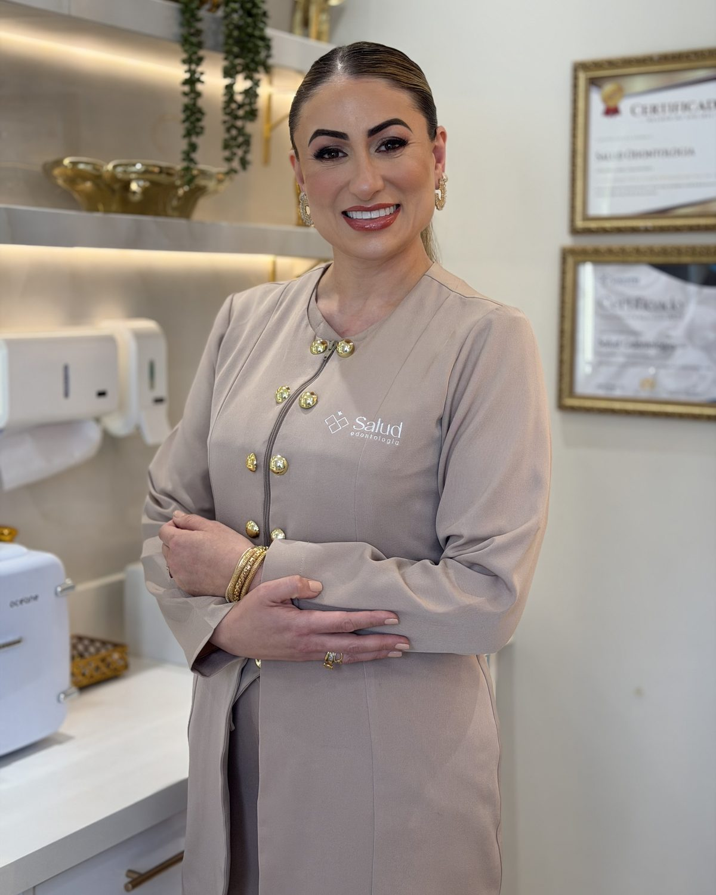
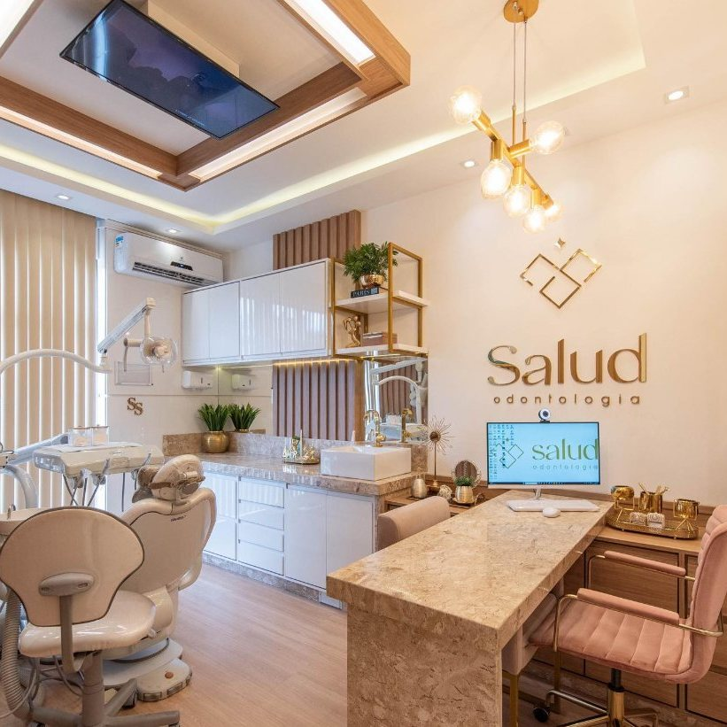
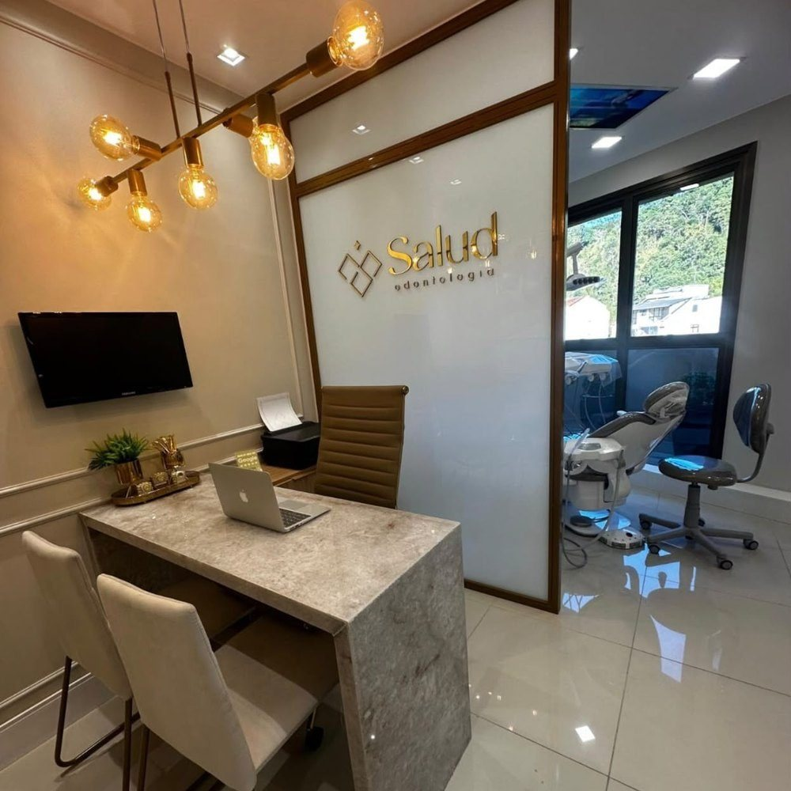

Transformando vidasatravés do sorriso
Nova Friburgo, RJ
Implantes, prótese e estética com uma equipe que explica cada etapa.
Agendar avaliaçãoOdontologia sem medo
Muita gente adia o dentista por medo ou por vergonha do sorriso. Aqui você é ouvido primeiro, entende o que vai ser feito e começa quando se sentir seguro.
“A paciência que os profissionais têm com o paciente é algo fora do sério.”
Gleison Costa“Respeito com o meu quadro clínico. Atendimento humanizado.”
Vânia Duarte“Passa muita segurança e o ambiente é super acolhedor.”
Ana Beatriz
- 22
- anos de Odontologia
- +10 mil
- implantes realizados
- 5,0
- no Google, com 256 avaliações
- Sedação
- inalatória disponível
Depoimentos reais
Quem passou pela Salud conta como foi
Nas palavras de quem passou por aqui
José Paulo · Prótese protocolo
1 / 7
Responsável técnica: Dra. Sâmya Saib, CRO-RJ 32083. Depoimentos publicados com autorização dos pacientes.
Começar agoraTratamentos
Várias especialidades na mesma clínica, com o plano conversado antes de começar.

22 anos de Odontologia
Dra. Sâmya Saib
Fundadora e responsável técnica · CRO-RJ 32083
Trabalho com Odontologia há 22 anos e fundei a Salud para cuidar de cada paciente com seriedade e carinho. Além da clínica, sou pianista, e levo da música a atenção aos detalhes.
Agendar consultaQue o seu trabalho revele a sua competência, mas que a forma como você cuida das pessoas revele a presença de Deus em você. Excelência é fazer bem o trabalho. A grandeza é fazer o bem às pessoas.
Dra. Sâmya Saib


Uma clínica pensada para o seu conforto
Várias especialidades no mesmo lugar, em um ambiente acolhedor e com tecnologia para planejar cada etapa do seu tratamento.
- Top of Mind BrasilSalud Odontologia
- Prêmio Melhor do AnoSalud Odontologia
Descubra o tratamento ideal para o seu sorriso
Leva 1 minuto. No fim, você envia as respostas pelo WhatsApp.
“O atendimento é sem palavras. A paciência que os profissionais têm com o paciente é algo fora do sério.”
“Descobri a clínica pelo Google, fui muito bem atendida, com rapidez, com carinho e principalmente respeito com o meu quadro clínico.”
“Fui muito bem atendida desde o contato via WhatsApp. A clínica realmente faz jus ao que se propõe.”
“Equipe nota mil, fui muito bem acolhido por todas. Só agradecer a todo carinho recebido.”
“Desde quando comecei meu tratamento, fui bem tratada e trouxe meus pais juntos. Além de conseguir custear todo o tratamento.”
“A equipe é extremamente atenciosa, passa muita segurança e o ambiente é super acolhedor. Recomendo de olhos fechados.”
“Clínica impecável! Profissionais altamente qualificados e equipamentos de ponta.”
“Profissionais incríveis, em todo o sentido, a receptividade incrível! Carinho, atenção e acima de tudo profissionalismo.”
“O atendimento é sem palavras. A paciência que os profissionais têm com o paciente é algo fora do sério.”
Dúvidas frequentes
Quais são as formas de pagamento?
Temos condições de pagamento facilitadas. Fale com a gente pelo WhatsApp para conhecer as opções para o seu tratamento.
Vocês atendem convênio?
Consulte pelo WhatsApp quais convênios atendemos hoje.
Colocar implante dói?
O procedimento é feito com anestesia local. Na avaliação, a equipe explica cada etapa e os cuidados depois da cirurgia.
O que é a sedação inalatória?
É uma opção para quem sente ansiedade no dentista. A indicação é avaliada pela equipe na consulta.
Quanto tempo leva uma prótese protocolo?
Depende de cada caso. O prazo é definido no plano de tratamento, apresentado antes de começar.
Como agendar uma avaliação?
Pelo WhatsApp. O atendimento é com hora marcada.
Como chegar
R. Dr. Ernesto Brasílio, 74, Sala 601Centro, Nova Friburgo, RJ
28610-120
Atendimento com hora marcada.
Agende sua avaliação
Seu novo sorriso começa com uma conversa
Atendimento com hora marcada. Fale com a equipe pelo WhatsApp e escolha o melhor horário para você.
Agendar avaliação